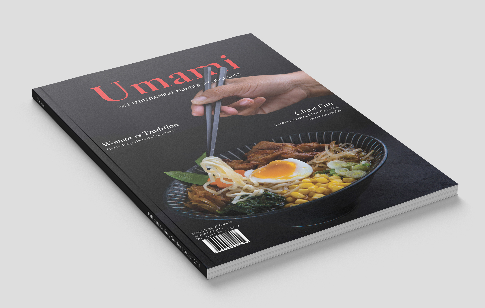
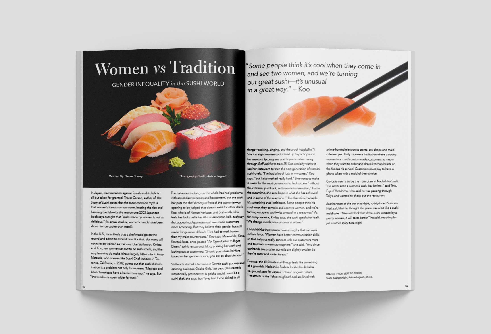

Jewel or Juice UI

Project Details
This project is a layout for a fictional asian food and news magazine. The project was done in Adobe InDesign and features the cover, and 4 pages of layout, including a table of contents page.

Process
The process involved gathering high resolution images and articles for the magazine. I wanted strong imagery and enticing shots of food to draw the viewer into the magazine. I also aimed for the type to work well with the images in layout. Once I gathered material for the layout, I started designing the cover and table of contents pages. After, I began working on the interior pages which featured an article and quotes.